01Install
- Download
VolumeX-Setup.exe. - Run it. If Windows SmartScreen says it "protected your PC", choose More info → Run anyway. The installer isn't code-signed yet.
- Follow the wizard. Keep Install VB-CABLE by VB-Audio ticked: it's what lets VolumeX go above 100%. You can also start VolumeX when you sign in and add a desktop shortcut.
- If you kept VB-CABLE ticked, Windows asks for permission once while it's installed, and setup offers to restart your PC at the end. Say yes: VB-CABLE switches on after a restart.
- VolumeX appears in the system tray. Click the ^ arrow near the clock if you don't see it.
VolumeX.exe. It can install VB-CABLE for you from its setup screen.02Unlock boost
Windows won't set any volume above 100%. To go further, the sound itself has to be amplified. VolumeX does that with the help of VB-CABLE, a free virtual audio device made by VB-Audio. Only the apps you boost play through it. Everything else goes straight to your speakers, exactly as before.
The setup screen opens the first time you start VolumeX. The first page lets you try a boost slider. The second page installs VB-CABLE:
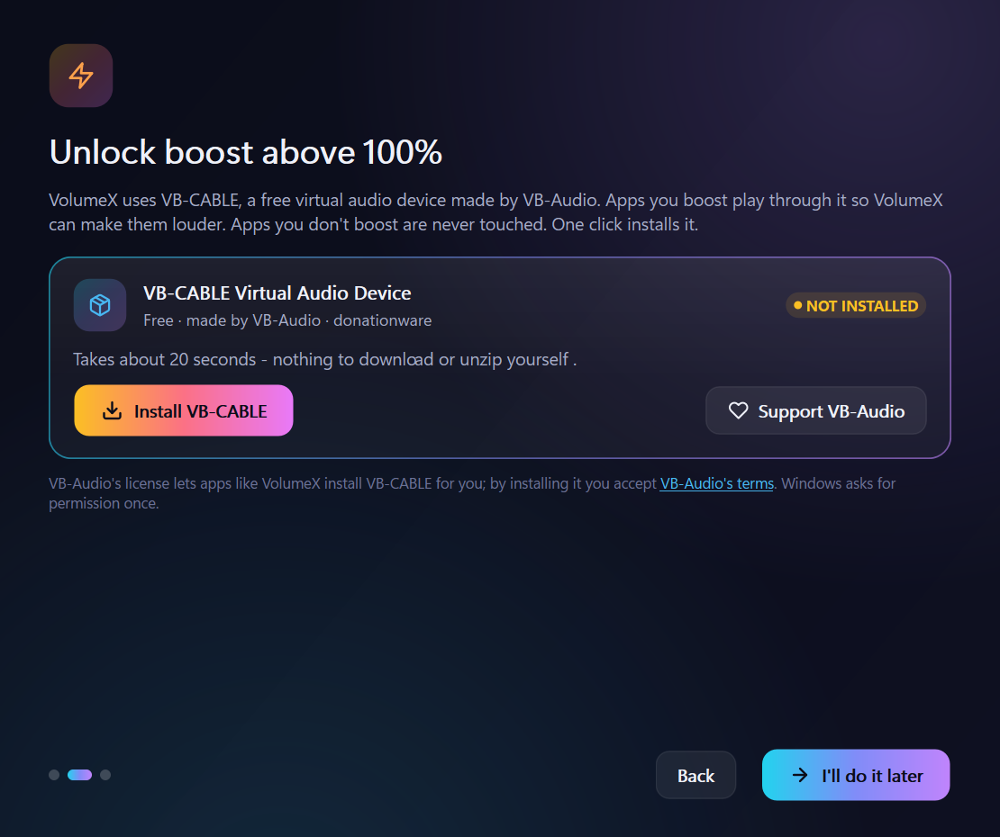
- Click Install VB-CABLE. VolumeX checks that the package is genuinely signed by VB-Audio before running it.
- Approve the Windows permission prompt. The install takes about 20 seconds.
- When it says Restart needed, restart your PC, or click Restart now. VolumeX finds VB-CABLE by itself afterwards and the card turns green.
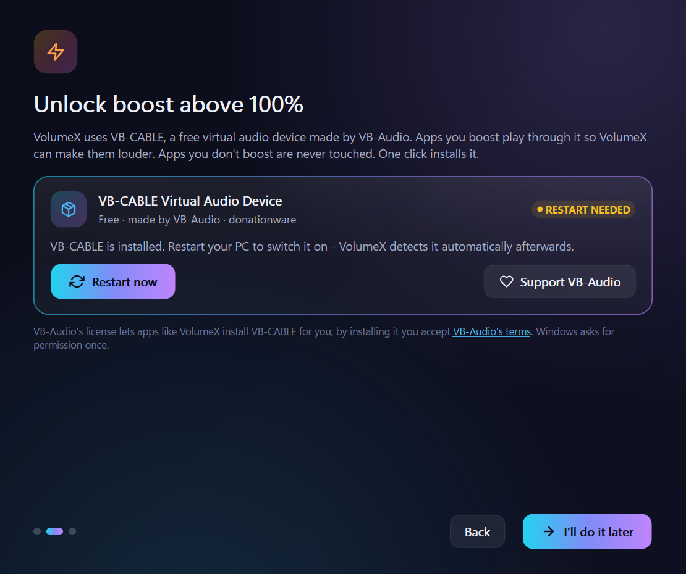
Skipped it? VolumeX works as a smart mixer up to 100% until you're ready. The Mixer shows an Unlock boost banner that brings you back to this step, and so does Settings → Troubleshooting → Run setup.
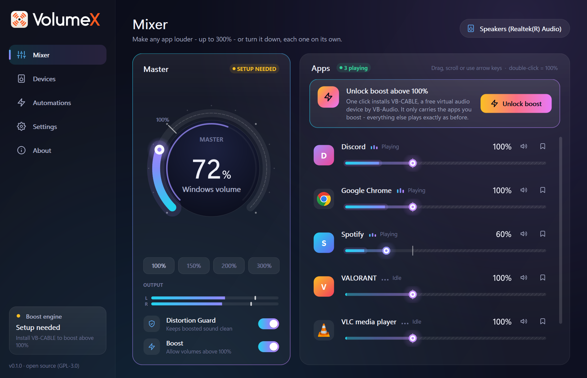
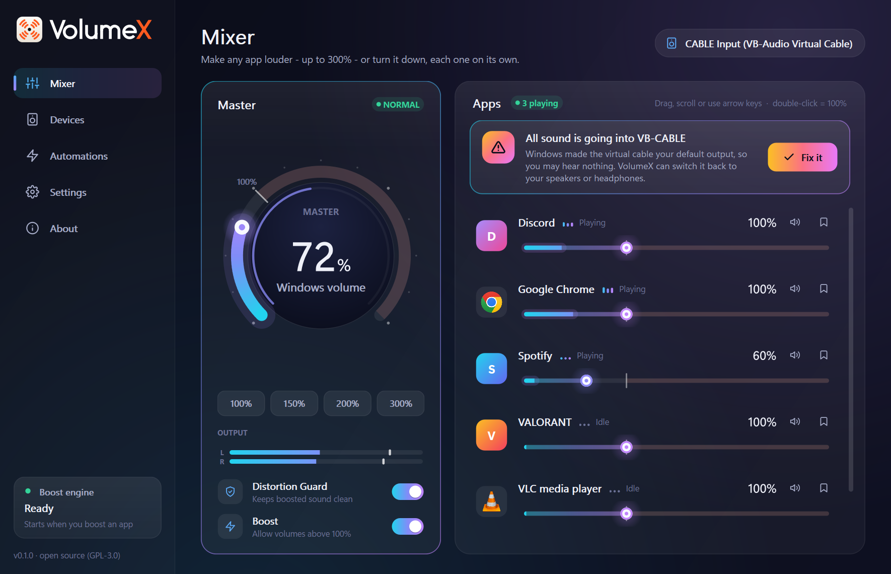
If the automatic install fails, the card offers Open VB-CABLE setup, VB-Audio's own installer. Click Install Driver there, then restart.
03The mixer
The Mixer is VolumeX's main screen: the master dial on the left, and every app that's making sound on the right.

The master dial
- 0 to 100% is your normal Windows volume, the same one the taskbar and your keyboard's volume keys change.
- Above 100% boosts every app at once. The number turns warm and a BOOST label shows how many decibels you've added.
- Drag around the dial, scroll over it, or use the quick presets underneath: 100%, 150%, 200% and the maximum.
- Output shows what's playing. When the Distortion Guard is working, it says GUARD ACTIVE and how much it's holding back.
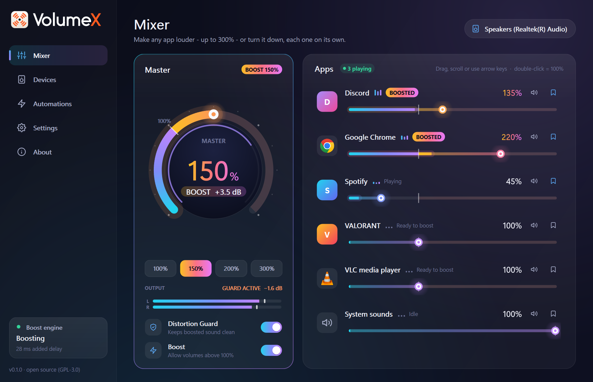
App rows
Each app has its icon, its name and status, a slider, the current level, a mute button and a remember (bookmark) button. Apps show up as soon as they make a sound. Browsers with many processes appear as one app.
The slider's notch marks 100%. Left of it is normal volume, drawn in cool colours. Right of it is the boost zone, drawn in warm colours. The bright part inside the slider is a live meter of what the app is playing.
| Do this | To |
|---|---|
| Drag | Set any level. The slider snaps to 100% as you pass it. |
| Scroll wheel | Change by 2%. Hold Ctrl for 10%. |
| ← → | Change by 1% (click the slider first). |
| PgUp PgDn | Change by 10%. |
| Home End | Jump to 0% or to the maximum. |
| Double-click | Back to 100%. |
What the status means
| Status | Meaning |
|---|---|
| Playing / Idle | The app is or isn't making sound right now. |
| BOOSTED | The app is above 100% and playing through the boost engine. |
| Ready to boost | It's set above 100% and will be boosted as soon as it plays. |
| Restart app to boost | The app didn't switch to the boost path while it was running. Close and reopen it once. Until then it plays at up to 100%. |
| Setup needed | VB-CABLE isn't installed yet. See Unlock boost. |
| Boost paused | You've turned Boost off, so everything plays at up to 100%. |
| Muted | You muted the app with its speaker button. |
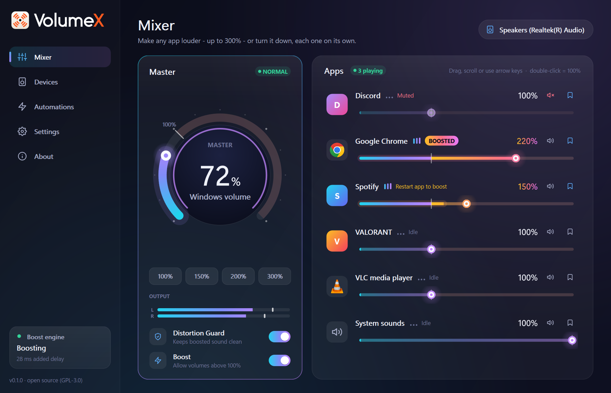
Boost and the Distortion Guard
- Boost turns all boosting on or off. Off puts every app back at 100% or below, straight away, without forgetting your settings.
- Distortion Guard is a look-ahead limiter. It catches peaks a few milliseconds before they would clip, so boosted audio stays clean. Leave it on.
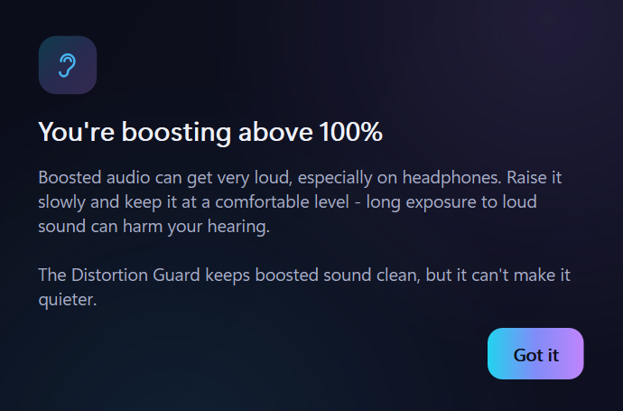
04Tray & hotkeys
VolumeX lives in the system tray. Closing its window keeps it running there, so your levels keep working.
 Boosting
Boosting| Icon | Meaning |
|---|---|
| White or dark glyph | Normal. The glyph matches your taskbar's light or dark theme. |
| Orange glyph | Something is being boosted right now. |
| Faded glyph | Your output device is muted. |
- Click the icon for the quick mixer: the master slider, the apps that are playing, and Boost and Guard switches.
- Double-click to open the main window.
- Right-click for Open VolumeX, Pause boost, Reset audio, Settings and Quit VolumeX.

Hotkeys
These work from any app:
| Keys | Action |
|---|---|
| Ctrl Alt ↑ | Boost the app you're using by 10%. |
| Ctrl Alt ↓ | Turn the app you're using down by 10%. |
| Ctrl Alt 0 | Reset the app you're using to 100%. |
| Ctrl Alt PgUp | Master up by 10%. |
| Ctrl Alt PgDn | Master down by 10%. |
| Ctrl Alt B | Pause or resume all boost. |
A small overlay near the bottom of the screen shows the new level. You can turn it off in Settings.
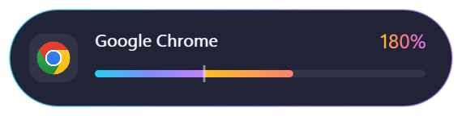
To change a shortcut, go to Settings → Hotkeys, click it and press the new combination. It needs Ctrl, Alt or Win. Backspace clears it and Esc cancels. A shortcut shown in amber is already taken by another program.
05Devices
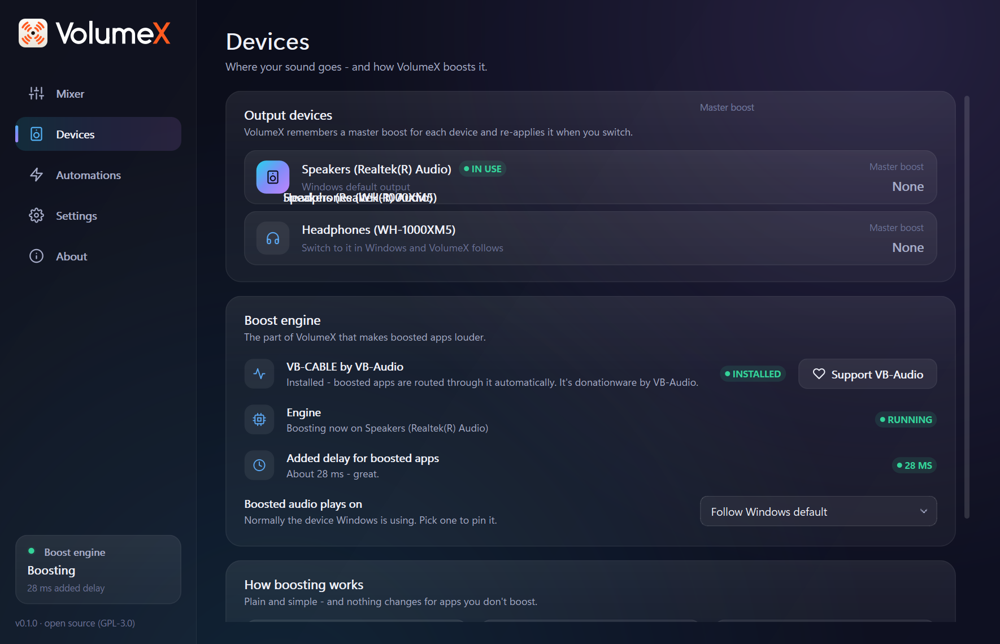
- Output devices: VolumeX follows whichever device Windows is using. It remembers the master boost for each one, so your headphones can sit at 180% while your speakers stay at 100%. Switch devices in Windows and VolumeX applies the right boost.
- VB-CABLE by VB-Audio: whether it's installed, with an Install button if not, and a link to support VB-Audio if it is.
- Engine: Ready means it's waiting and starts by itself when you boost something. Boosting means it's working.
- Added delay for boosted apps: usually 20-45 ms. Apps you don't boost get no delay at all.
- Boosted audio plays on: normally Follow Windows default. Pick a device to always send boosted audio there.
06Automations
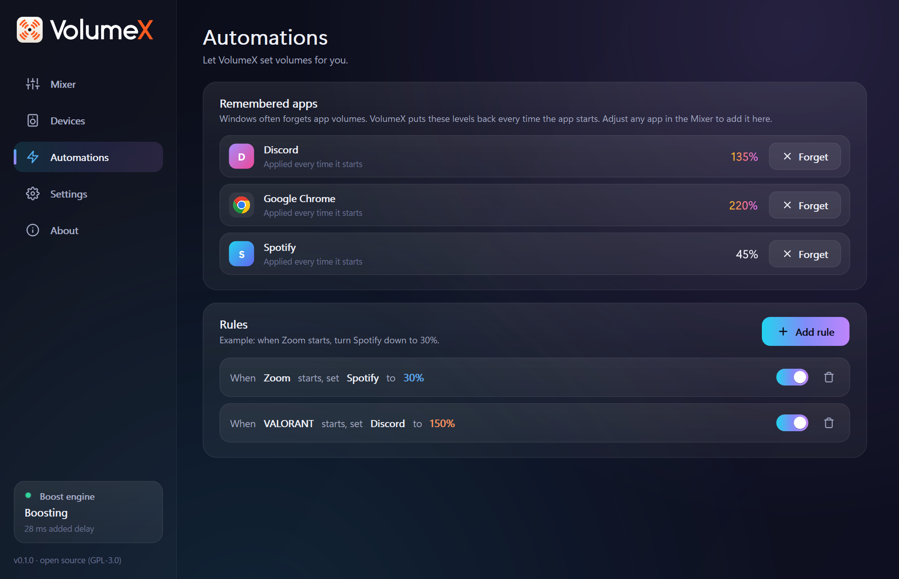
Remembered apps
Windows often forgets per-app volumes. VolumeX remembers any app you adjust and puts its level back every time it starts. The bookmark button on each app row turns this on or off. Forget removes an app here.
Rules
A rule changes one app's volume when another app starts. For example: when Zoom starts, set Spotify to 30%.
- Click Add rule.
- Choose the app that triggers it, the app to change, and the level.
- Click Add rule. Use its switch to pause it, or the bin to delete it.
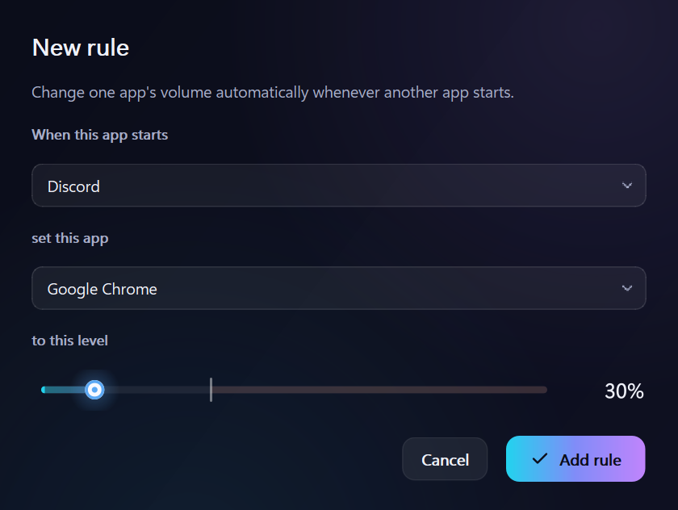
07Settings
| Setting | What it does |
|---|---|
| Start with Windows | Starts VolumeX quietly in the tray when you sign in, so your levels are always applied. |
| Start minimized | Opens to the tray instead of the window. |
| Keep running when closed | Closing the window keeps VolumeX in the tray. Quit from the tray menu. |
| On-screen volume display | Shows the overlay when you use hotkeys. |
| Maximum boost | The highest level any slider can reach: 200%, 300% (default), 400% or 500%. |
| Distortion Guard | The look-ahead limiter. Keep it on unless you know why not. |
| Appearance | Seven colour themes. Boosted levels always show in warm colours. |
| Hotkeys | Change or clear any shortcut. See Tray & hotkeys. |
| User manual | Opens this manual. |
| Reset audio | Every app back to 100% and boost off, in one click. Use it if anything sounds wrong. |
| Boost setup | Opens the VB-CABLE setup again. |
| Log files | Opens the log folder, which is useful when reporting a problem. |
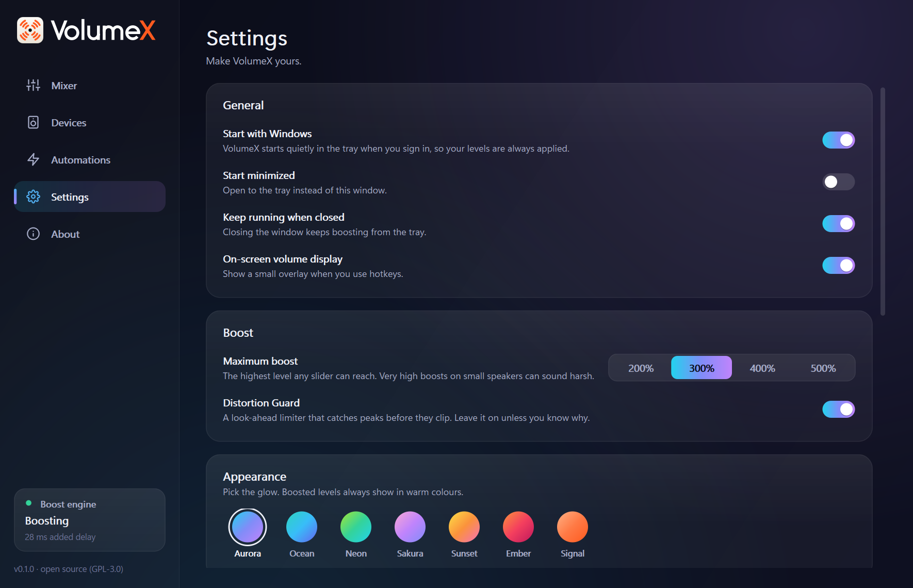
The About page shows the version, links to this manual, the website and the source code, a way to send feedback, and the credits, including a link to support VB-Audio.
08Troubleshooting
I hear nothing after installing VB-CABLE
Windows has probably made CABLE Input your default output. Click Fix it on the banner in the Mixer. You can also go to Windows Settings → System → Sound → Output and choose your speakers or headphones.
An app says "Restart app to boost"
Some apps, Spotify for example, only pick up a new audio path when they start. Close the app and open it again, and it's boosted from then on. If the app has its own output-device setting, set it to Default.
A game or music program can't be boosted
Apps that use exclusive mode audio, some games and pro audio tools, bypass the Windows mixer entirely, so no mixer can boost them. The same goes for apps set to one fixed output device in their own settings. Switch the app to shared mode or Default device if it has that option.
Boosted audio is slightly behind the picture
Boosted apps get about 20-45 ms of delay, which is usually unnoticeable in video. For competitive games, keep the game at 100% or below: it then plays directly with no added delay.
Boosted sound is harsh or crackly
Make sure the Distortion Guard is on (Mixer or Settings). Very high boosts can still sound harsh on small laptop speakers. Try a lower level, or lower Settings → Maximum boost.
It still says "Setup needed" after I installed VB-CABLE
Restart your PC: VB-CABLE switches on after a restart. If it's still missing, open Settings → Troubleshooting → Run setup and install again, or use Open VB-CABLE setup.
The Boost engine shows "Problem"
Usually your output device was unplugged or changed while something was boosted. VolumeX retries by itself. Choosing another output in Windows also restarts it. Apps keep playing at up to 100% in the meantime.
A hotkey doesn't work
Another program may already use that combination. It's shown in amber in Settings → Hotkeys. Pick a different one.
Something just sounds wrong
Use Reset audio from the tray menu or Settings → Troubleshooting. Every app goes back to 100% and boosting turns off. Nothing is deleted, and you can boost again straight away.
09Privacy & safety
- No network, no telemetry, no account. The one exception: if you ask VolumeX to install VB-CABLE and the copy that ships with it is missing, it downloads VB-Audio's official package from vb-audio.com and verifies its signature first.
- No code injection. VolumeX never touches other programs' memory, so it's safe to run alongside games with anti-cheat.
- Always undoable. Every change VolumeX makes to Windows audio is written to a journal first, and undone when you quit, if VolumeX crashes, and when you uninstall.
- Gentle on ears. Levels ramp smoothly instead of jumping, the Distortion Guard is on by default, and the first boost comes with a hearing note.
Settings are stored in %APPDATA%\VolumeX\settings.json. Logs and the journal are in %LOCALAPPDATA%\VolumeX. The code is open source: github.com/SihabSahariar/VolumeX.
10Uninstall
Go to Windows Settings → Apps → Installed apps → VolumeX → Uninstall. The uninstaller first sends every app VolumeX boosted back to your normal device, then removes VolumeX and its start-up entry. If VolumeX installed VB-CABLE, it asks whether to remove that too. Choose No if other apps use it.
Using the portable zip? Quit VolumeX from the tray, run VolumeX.exe --restore once, then delete the folder.
Prefer paper? Download this manual as a PDF.